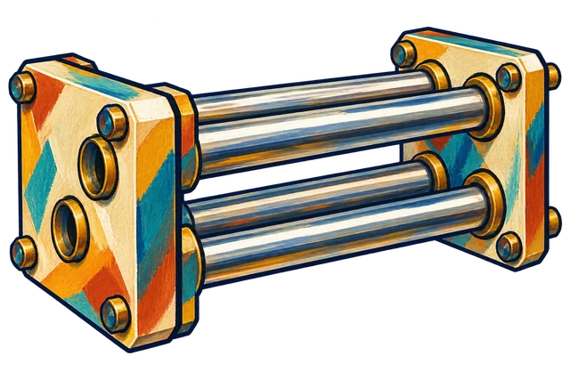

Produzido para estudar os elementos mais pesados.
Folheto 103 / 118
Actinídeo
Laurêncio
Produzido para estudar os elementos mais pesados.
Um elemento, muitas conexões. Percorra este folheto para descobrir o que sua identidade atômica revela e como ela se relaciona com o mundo.
- Símbolo químico
- Lr
- Na tabela
- Actinídeo · período 7
- Número de massa indicado
- [262]
Do desenho à química
Conexões que contam histórias
O laurêncio encerra a série dos actinídeos nesta coleção. Sua configuração eletrônica é um exemplo da importância de confrontar modelos de preenchimento com investigações experimentais e cálculos.
Como ler a ilustração deste folheto?
A arte representa: Filtro de íons. Produzido para estudar os elementos mais pesados.
Uma ilustração pode mostrar um objeto, composto, liga ou contexto de pesquisa. Ela não representa necessariamente uma amostra pura do elemento.
Classificado como sólido na referência PubChem. As amostras disponíveis são muito limitadas; a classificação tabulada não deve ser confundida com uma caracterização macroscópica completa. Fonte: PubChem
Identidade por dentro
O que faz Lr ser Lr?
São os 103 prótons no núcleo que identificam o elemento laurêncio. No átomo neutro, essa carga positiva é equilibrada por 103 elétrons.
- Prótons
- 103
- Elétrons · átomo neutro
- 103
- Nêutrons
- Dependem do isótopo
Elétrons, camada por camada
Configuração do átomo neutro, conforme a base de referência. As camadas agrupam os elétrons pelo número quântico principal n.
Escolha um folheto para ver os subníveis ocupados nessa camada.
Distribuição completa e configuração
[Rn] 5f¹⁴ 7s² 7p¹
Colchetes na configuração representam os elétrons de um gás nobre. Eles têm significado diferente dos colchetes usados no número de massa.
Sem abreviação: 1s² 2s² 2p⁶ 3s² 3p⁶ 3d¹⁰ 4s² 4p⁶ 4d¹⁰ 5s² 5p⁶ 4f¹⁴ 5d¹⁰ 6s² 6p⁶ 5f¹⁴ 7s² 7p¹
| Camada | Elétrons | Subníveis ocupados |
|---|---|---|
| K · n = 1 | 2 | 1s² |
| L · n = 2 | 8 | 2s² 2p⁶ |
| M · n = 3 | 18 | 3s² 3p⁶ 3d¹⁰ |
| N · n = 4 | 32 | 4s² 4p⁶ 4d¹⁰ 4f¹⁴ |
| O · n = 5 | 32 | 5s² 5p⁶ 5d¹⁰ 5f¹⁴ |
| P · n = 6 | 8 | 6s² 6p⁶ |
| Q · n = 7 | 3 | 7s² 7p¹ |
Este esquema organiza a contagem de elétrons: não desenha trajetórias nem distâncias reais. A última camada ocupada não deve ser confundida, em todos os casos, com o conjunto dos elétrons envolvidos em ligações.
Pergunta de bolsoPara o isótopo indicado por [262], qual seria o número de nêutrons?
Para esse isótopo, N = A − Z = 262 − 103 = 159. Outros isótopos do mesmo elemento têm outros números de nêutrons.
Medidas com significado
Compare, relacione, entenda
Abra cada medida para entender o que ela descreve. Um campo sem valor indica uma informação ausente nesta base, nunca zero.
Raio covalente161 pmEntender esta medida
Medida associada à distância entre núcleos em uma ligação covalente. Depende do ambiente químico e da convenção adotada. Um picômetro (pm) corresponde a 10⁻¹² m. Esta base usa o conjunto de raios covalentes calculados de Pyykkö e Atsumi.
Eletronegatividade · Pauling1,3 Entender esta medida
Tendência relativa de um átomo a atrair elétrons em uma ligação. A escala de Pauling não tem unidade; a ausência de um valor aqui não significa eletronegatividade zero.
Primeira energia de ionização4,9 eVEntender esta medida
Energia necessária para retirar o primeiro elétron de um átomo neutro, isolado e no estado gasoso. Uma energia maior indica maior custo para essa remoção.
Fusão · valor tabulado1627 °CEntender esta medida
Transição entre sólido e líquido. A temperatura depende da pressão e, quando há formas diferentes da substância, da estrutura considerada. Para elementos com amostras muito limitadas, valores tabulados podem depender de estimativas e de condições específicas; eles não confirmam o estado físico.
Ebulição · valor tabuladoNão disponível nesta baseEntender esta medida
Transição entre líquido e gás. O valor tabulado exige atenção às condições da substância e à pressão. Para elementos com amostras muito limitadas, valores tabulados podem depender de estimativas e de condições específicas; eles não confirmam o estado físico.
Número de massa indicado[262]Entender esta medida
O número entre colchetes é o número de massa A de um isótopo indicado na tabela de referência. Não é uma massa atômica média: A conta prótons e nêutrons.
Para elementos com amostras muito limitadas, valores tabulados podem depender de estimativas e de condições específicas; eles não confirmam o estado físico.
Dois folhetos, lado a lado
O que muda entre os elementos?
As propriedades acima podem ser consultadas sem JavaScript. Ative-o para comparar dois elementos neste quadro.
Da origem aos materiais
Da origem à obtenção
O laurêncio é um elemento sintético, produzido para pesquisa por colisões de núcleos em aceleradores. A identificação se apoia nos sinais dos átomos produzidos e em seus decaimentos. Não existe extração mineral ou produção comercial comum desse elemento.
Produzir um elemento é o mesmo que separar uma substância?
Reações químicas reorganizam átomos em substâncias. Para produzir núcleos de outro elemento, é preciso mudar o número de prótons por processos nucleares. Depois, técnicas químicas podem separar os produtos.
Uma posição, muitas relações
Encontre seus vizinhos
- Posição
- Série destacada
- Período
- 7
- Bloco na coleção
- F
- Categoria
- Actinídeo
Esta série pertence ao período 7. Ela aparece abaixo da tabela para tornar o desenho mais compacto. A coluna do folheto nessa linha não corresponde a um número de grupo. A atribuição do grupo 3 tem convenções distintas; esta coleção identifica a série sem atribuir grupos artificiais.
Outros folhetos desta série
Continue a leitura
Fontes e notas do folheto
As ilustrações e os textos aproximam os elementos químicos de situações do cotidiano. As propriedades apresentadas devem ser interpretadas considerando as condições de referência, os métodos e as convenções utilizados nas fontes consultadas. As referências a seguir permitem aprofundar os conhecimentos e compreender melhor os dados. Quando a incerteza não é indicada, o valor não deve ser considerado exato.
- RSC: Laurêncio — contexto da ilustração e leitura complementar.
- CIAAW — pesos atômicos abreviados (2024) — referência editorial para as massas.
- IUPAC — tabela e convenções — grupos, séries e números de massa entre colchetes; edição de 4 de maio de 2022 para [A].
- NIST — energias de ionização — consulta especializada para a primeira ionização.
- Compilação de temperaturas — Wolfram ElementData — origem dos valores de transição da base e de suas notas sobre formas da substância.
- Raio atômico: Pyykkö e Atsumi — Molecular single-bond covalent radii for elements 1–118. Chemistry — A European Journal 15 (2009), 186–197.
Convenções de leitura
O número entre colchetes é o número de massa A de um isótopo indicado na tabela de referência. Não é uma massa atômica média: A conta prótons e nêutrons.
As propriedades descrevem contextos diferentes: a primeira ionização considera átomos no gás, o raio depende de uma convenção e as temperaturas dependem da pressão e da forma da substância. Esses valores não são automaticamente propriedades do objeto ilustrado.
O estado físico segue a condição de 25 °C e 1 atm. Algumas fontes complementares usam 20 °C; essa diferença precisa ser considerada ao comparar referências.